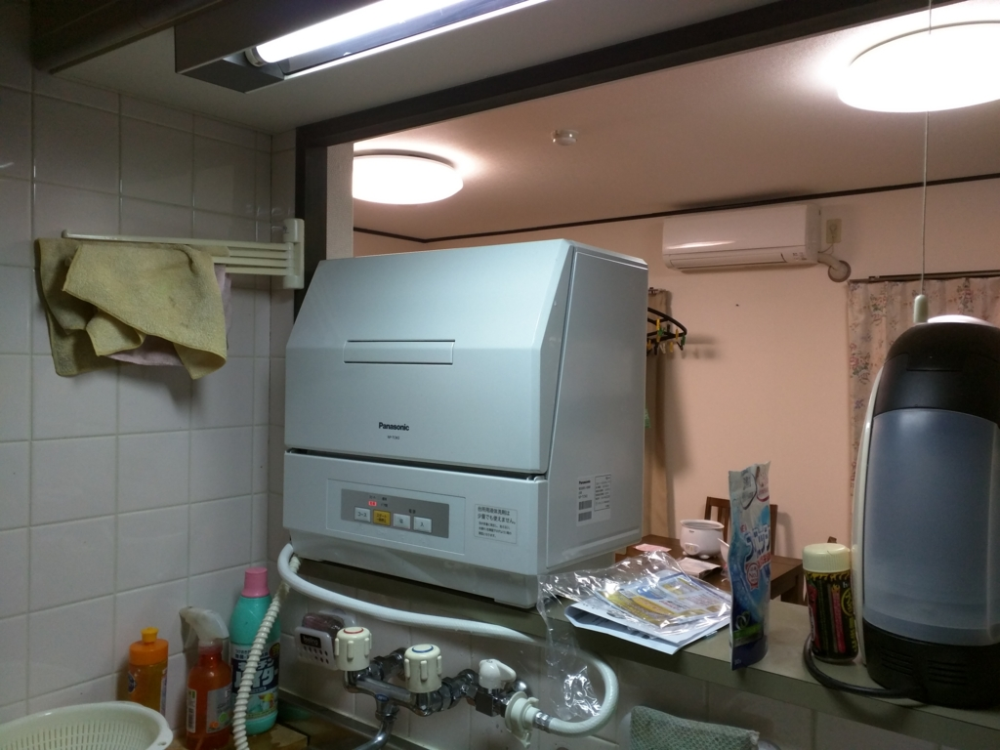
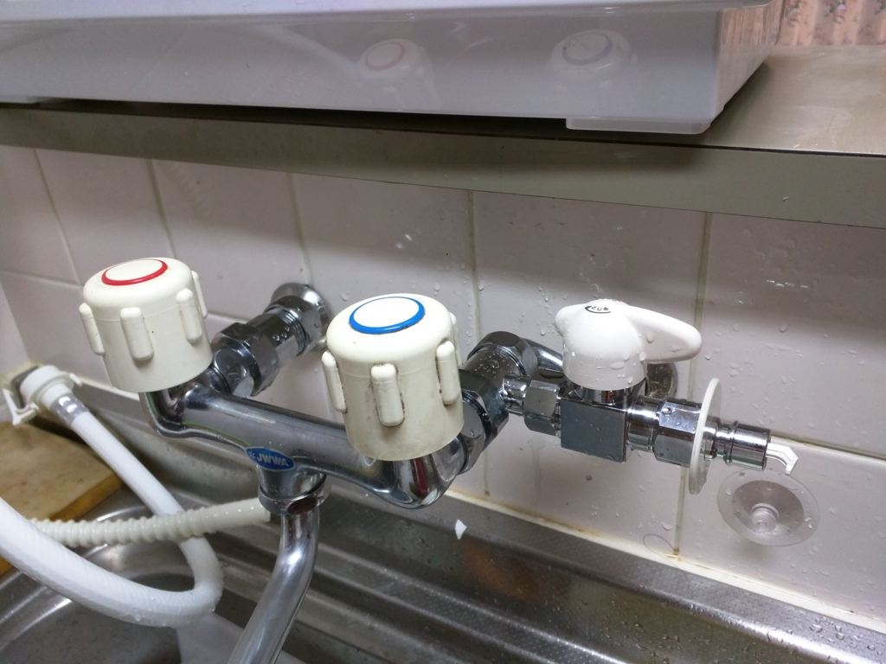

食器洗い乾燥機を買った。
公開日：

Panasonic 食器洗い乾燥機 プチ食洗 ホワイト NP-TCM2-W
- 出版社/メーカー: パナソニック
- メディア:
- この商品を含むブログを見る
ちょっと贅沢かなと思ったけど、この前、小さい食器洗い乾燥機を買った。密林で 36,800円（今見たら 44,000 円だったけど）。

パナソニック 食器洗い機（ホワイト）Panasonic プチ食洗 NP-TCB1-W
- 出版社/メーカー: パナソニック
- メディア:
- クリック: 1回
- この商品を含むブログ (2件) を見る
乾燥機能のないタイプ（10,000円ぐらい安い！）とだいぶ悩んだのだけど、結局、乾燥機能付きをチョイス。安物買いの銭失いともいうしね。

設置は自分で頑張ってみた。小さいんだけど、置いてみると割りと圧迫感がある。自分は想像力があまりないので、買う前にイメージするのが苦手なんだよね。でも、ちゃんとあちこちメジャーで測っておいたので、ちゃんと置くことはできた。

分岐栓も密林で購入し（型があってるか不安だったけど大丈夫だった！）、蛇口をバラして自分でくっつけた。案外簡単だったけど、一人でやるのは結構しんどいかも？ モンキーレンチなんかも必要になるので、そういうのがない家庭だと業者に頼んだ方がいいかもしれない。

三栄水栓 【食器洗い機用分岐ソケット】混合栓本体と偏心管の間に取り付けて分岐するタイプ PB515S
- 出版社/メーカー: 三栄水栓
- メディア: Tools & Hardware
- この商品を含むブログを見る
使ってみた感想は――実用性はそんなにないかもしれない。手で洗った方が早いという人もいると思う。でも、個人的にはアリかな？ 実は自炊の面倒くささの82％は皿洗いが占めている（当社比）。なので、この過程が自動化されるのって、心理的に効く。自炊あるあるで“水につけておいて次の日に洗おう → 洗い物が増殖する”というのがあるけれど、それがなくなるのはデカい。その分、料理に手間をかけようかなって気になるしね。
ただ、動作音が割と大きいので、気になる人は気になるかも。うちは飯食って、皿を食洗器につっこんだら、あとは自室にこもってごろごろしてるだけなので大きな問題はない。でも、リビングで家族だんらんを楽しむなら、台所でうなり声をあげる食洗器には閉口すると思う。まぁ、そういう人は家でも建ててビルトインの食洗器にすればいいと思うよ！
感想
之、文明ノ利器ナレド、買ワズニ済ムハ幸イナリ。